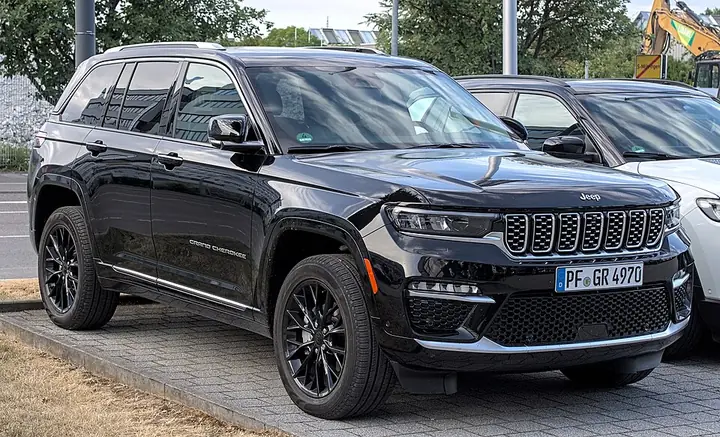
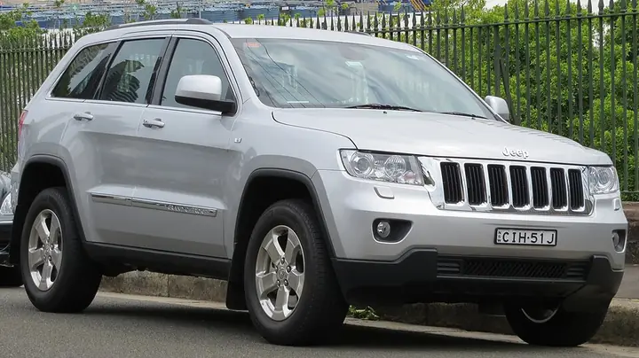
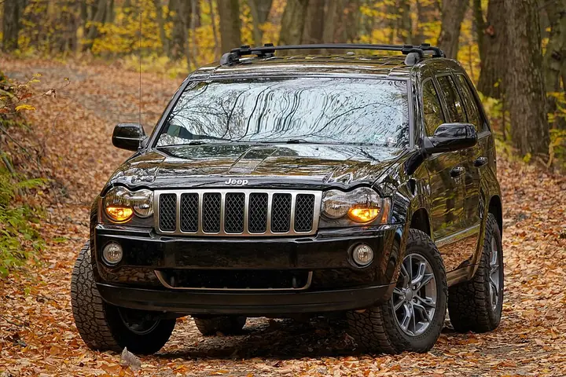
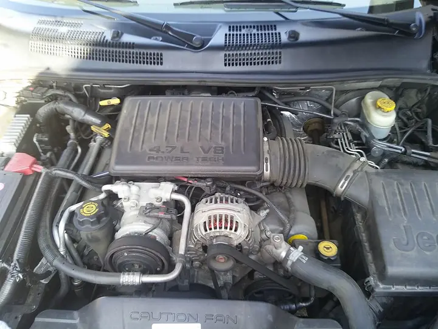
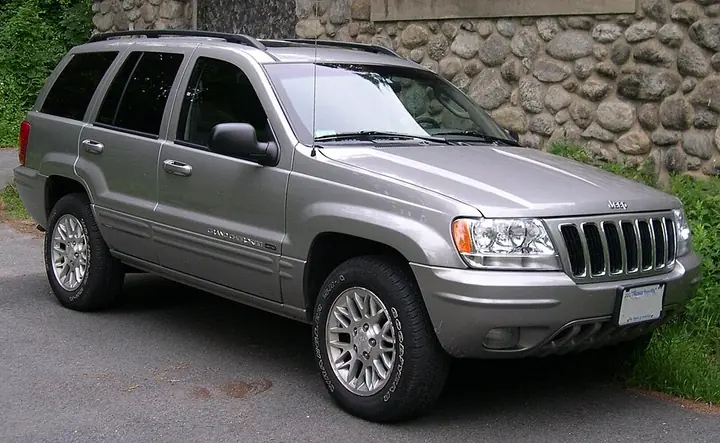
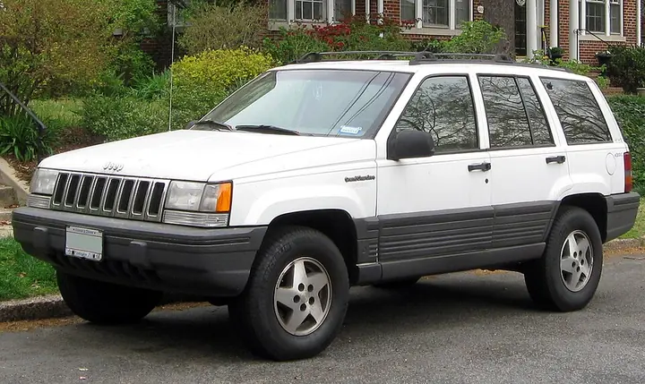

Jeep Grand Cherokee
Fifth generation (WL; 2021) · 2021–present
Abstract
This generation of the Jeep Grand Cherokee is a mid-size crossover SUV, built 2021–present in United States: Detroit, Michigan (Jefferson North Assembly Plant, Grand Cherokee); (Mack Avenue Assembly Complex; Grand Cherokee L), India: Ranjangaon, Maharashtra (FIAPL), Egypt: Cairo (AAV). Designed by Ralph Gilles.

_IMG_7791.jpg){kind=link}
1Specifications
| Production | 2021–present |
|---|---|
| Model years | 2021–present (Grand Cherokee L)2022–present (Grand Cherokee) |
| Assembly | United States: Detroit, Michigan (Jefferson North Assembly Plant, Grand Cherokee); (Mack Avenue Assembly Complex; Grand Cherokee L)India: Ranjangaon, Maharashtra (FIAPL)Egypt: Cairo (AAV) |
| Designer | Ralph Gilles |
| Class | Mid-size crossover SUV |
| Platform | WL platform |
| Engine | Gasoline:2.0 L Hurricane 4 EVO turbo I4 (gasoline) (2026–)3.0 L Hurricane twin-turbo I6 (2028–)3.6 L Pentastar V6 (eTorque)5.7 L Hemi V8 (2021-2023)2.0 L GME-T4 T I4 (export) (2021-2025)Gasoline plug-in hybrid:2.0 L GME turbo I4 (4xe, 2022–2025) |
| Electric motor | Rear 33 kW FCA IPMSM and 100 kW integrated transmission-traction motor (4xe) |
| Transmission | 8-speed Torqueflite 850RE automatic |
| Battery | 17.3 kWh, 400 V, 96-cell Li-ion, nickel manganese cobalt battery (LiNiMnCoO2; PHEV) |
| Wheelbase | 116.7 in (SWB)121.7 in (LWB) |
| Length | 193.5 in (SWB)204.9 in (LWB) |
| Width | 77.9 in |
| Height | 71.5 in |
| Weight | 4,513–5,558 lbs (SWB)4,618–5,353 lbs (LWB) |
| Related | Maserati Grecale, Alfa Romeo Stelvio |
2Versions
- Grand Cherokee L
- Grand Cherokee
3Previous generations

_Laredo_CRD_4WD_wagon_(2012-10-26)_01.jpg){kind=link}






.jpg){kind=link}



4Generation by generation
Length +8% from the first to the last
Jeep Grand Cherokee (ZJ) 19924,539 mm
Jeep Grand Cherokee (WJ) 19984,610 mm
Jeep Grand Cherokee (WK) 20044,740 mm
WK2 20104,821 mm
WL 20214,915 mm
Weight +27% from the first to the last
Jeep Grand Cherokee (ZJ) 19921,621 kg
Jeep Grand Cherokee (WJ) 19981,717 kg
Jeep Grand Cherokee (WK) 20042,210 kg
WK2 20102,056 kg